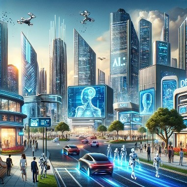

The Influence of Artificial Intelligence on the World
Artificial Intelligence (AI) is already changing the world in significant ways and its impact is
expected to grow exponentially in the coming years.

Here are some key areas where AI will likely have a transformative effect:
Healthcare: AI can revolutionize healthcare by improving diagnostics, personalizing
treatment,
and enhancing research into new medicines. Machine learning algorithms can analyze complex medical
data,
identify patterns, and assist in early detection of diseases like cancer.
Transportation: Autonomous vehicles, including cars, drones, and ships, will transform
transportation, potentially reducing accidents, optimizing traffic management, and improving
efficiency.
Environment: AI can play a significant role in fighting climate change and environmental
issues
by optimizing energy consumption, monitoring deforestation, and predicting natural disasters.
Manufacturing: AI-driven automation can increase efficiency, reduce costs, and improve
quality in
manufacturing processes. Predictive maintenance powered by AI can foresee equipment failures before
they
occur.
Agriculture: AI can enhance agricultural productivity through precision farming, which
includes
analyzing data on crop health, weather patterns, and soil conditions.
Finance and Economy: AI can transform financial services through personalized financial
planning,
fraud detection, and automated trading. It can also impact broader economic patterns by optimizing
supply chains and influencing employment through automation.
Education: Personalized learning experiences can be created using AI, adapting to individual
student's learning styles and pace, thereby improving education outcomes.
Retail and Commerce: AI can revolutionize retail with personalized shopping experiences,
inventory management, and supply chain optimization. E-commerce can use AI to provide
recommendations
and customer service through chatbots.
Security and Surveillance: AI can enhance security systems through facial recognition,
anomaly
detection, and automated threat identification, although this comes with privacy and ethical
considerations.
Entertainment and Media: AI can change how content is created and consumed, with algorithms
recommending personalized content to users and even helping in the creation of music, art, and
literature.
Ethical and Societal Impact: AI poses significant ethical challenges, including privacy
issues,
bias in decision-making, and the future of employment as automation increases. These challenges
necessitate thoughtful regulation and ethical guidelines.
Research and Development: AI accelerates R&D in various fields like physics, chemistry, and
materials science by analyzing vast datasets and simulating complex experiments.
In conclusion, AI's impact on the world is profound and multifaceted, offering tremendous benefits while
also posing significant challenges. The extent and direction of its influence depend on how we develop,
deploy, and regulate this powerful technology.